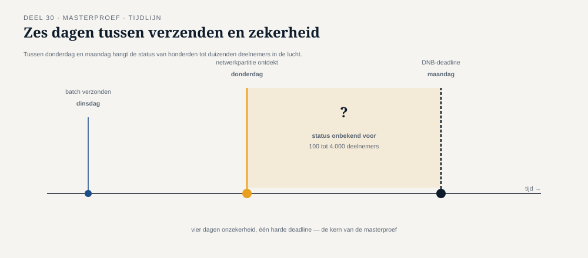

Deel 30 — Masterproef: de verdwenen bevestiging
Reader · Ductus-cursus Enterprise Integration Patterns · niveau 3 (expert) · deel 30 van 30
30.0 Vlak voor de deadline
Het is oktober 2027. De wettelijke deadline van 1 januari 2028 nadert. Meridiaan heeft, in de weken vóór de laatste, grote invaargolf, een asynchrone keten in productie die — op basis van alle patronen uit deze cursus — als robuust is beoordeeld: onveranderlijke events (deel 23), een georkestreerde, blokkerende datakwaliteitscontrole met een expliciete compensatiegrens (deel 25), poison-message-isolatie en resilience-maatregelen (deel 26-27), en een volledige, auditeerbare event backbone (deel 28-29).
Op een donderdagochtend meldt het operationeel beheerteam een afwijking: voor een deel van de laatste batch — precies hoeveel is nog onduidelijk, ergens tussen de honderd en de vierduizend deelnemers — is een invaar-event verzonden, maar is de bevestiging dat de externe pensioenadministrateur (die de definitieve validatie namens Meridiaan uitvoert) het event heeft ontvangen en verwerkt, nooit teruggekomen. Dit is niet het incident van deel 26 (poison message) — geen enkel bericht loopt vast. Het is ook niet het incident van deel 19 (dual-write) — de events staan onveranderlijk vastgelegd in de invaaradministratie. Het probleem zit specifiek in de koppeling met de externe administrateur: door een netwerkpartitie tussen Meridiaan en die administrateur, gecombineerd met een niet volledig sluitende consumer group-configuratie (deel 16) bij de administrateur zelf, is onduidelijk of de events daadwerkelijk zijn aangekomen en verwerkt, of onderweg zijn vastgelopen.
De DNB-rapportagedeadline voor deze batch is over vier dagen.
Het bestuur van Meridiaan staat voor een keuze tussen twee risicovolle opties, en heeft Caspar gevraagd — samen met het volledige integratieteam — een onderbouwd advies te presenteren.

30.1 De twee opties, en waarom geen van beide zonder risico is
Optie A: een her-run. Stuur alle events uit de betrokken batch opnieuw naar de externe administrateur, met het risico dat een deel daarvan al wél was aangekomen en verwerkt — een dubbele verwerking, ondanks de idempotentiemaatregelen uit deel 7, omdat niet volledig zeker is of de administrateur's eigen idempotentiebewaking (die buiten Meridiaans directe controle valt) foutloos functioneert onder deze specifieke, ongebruikelijke omstandigheid.
Optie B: wachten en onderzoeken. Wacht tot volledige zekerheid is verkregen over welke events daadwerkelijk zijn aangekomen, voordat een gerichte, selectieve her-run wordt gedaan — met het risico dat dit onderzoek langer duurt dan de vier resterende dagen, waardoor de DNB-rapportagedeadline voor deze specifieke batch wordt gemist.
Geen van beide opties is zonder risico, en — dit is de kern van de masterproef-opdracht — een goed advies kiest niet automatisch de optie die het minst eng klinkt, maar de optie die het beste te verdedigen is, met expliciete erkenning van wat er misgaat als die keuze verkeerd uitpakt. Dit is precies de rubric-eis die de familie van cursussen consequent hanteert: een onderbouwd "nee, dit niet" is sterker dan een oppervlakkig "ja, we doen alles".
30.2 De masterproef-opdracht
Vorm: een boardsimulatie over twee dagdelen, met vier rollen, waarbij de helft van de kritische vragen vooraf met de presentatoren wordt gedeeld en de andere helft onvoorzien is.
Dagdeel A — voorbereiding en eerste verdediging. Groepen van drie tot vier deelnemers krijgen het volledige scenario van 30.0, plus toegang tot (fictieve) technische gegevens: hoeveel events zijn verzonden, wat is er bekend over de netwerkpartitie, wat zegt de eigen event backbone (deel 23, 28) over de laatst bevestigde consumer group-positie bij de administrateur (deel 16). De groep bereidt een advies voor van maximaal twintig minuten, met een expliciete aanbeveling (A, B, of een derde, zelf onderbouwde optie) en een risicomatrix die voor elke optie benoemt: wat kan er misgaan, hoe waarschijnlijk is dat, en welke maatregel is genomen om dat risico te beperken.
Dagdeel B — bevraging en verdediging. De boardrollen (zie 30.3) bevragen elke groep gedurende dertig minuten. De helft van de vragen is vooraf, bij de opdracht, aan de groep bekendgemaakt (zodat een grondige voorbereiding mogelijk en beloond wordt); de andere helft wordt pas tijdens de sessie zelf gesteld, gebaseerd op specifieke zwakke plekken in het gepresenteerde advies — precies zoals een echt bestuur zou doorvragen op wat het meest onzeker aanvoelt.
30.3 De boardrollen
De CEO — vraagt door op de reputatie- en deadline-consequenties: "wat gebeurt er, extern en intern, als we deze deadline missen? Is dat werkelijk erger dan het risico van optie A?" Deze rol heeft, vooraf gedeeld, de vraag: "leg in twee zinnen uit waarom uw advies verdedigbaar is tegenover een bestuur dat vooral naar de deadline kijkt."
De sleutelfunctiehouder risicobeheer (vergelijkbaar met de rol uit de risicomanagementcursus, voor deelnemers die die cursus ook volgen) — vraagt door op de risicoafweging zelf: "hebt u de kans en impact van beide opties werkelijk kwantitatief onderbouwd, of is dit een onderbuikgevoel in tabelvorm?" Vooraf gedeelde vraag: "welk kwantitatief bewijs heeft u voor de geschatte omvang van het probleem (honderd tot vierduizend deelnemers) — is die bandbreedte zelf al onderzocht of aangenomen?"
De compliance-vertegenwoordiger — vraagt door op de wettelijke consequenties van beide opties: "als we voor optie B kiezen en de deadline toch wordt gemist, wat is dan het formele vervolgtraject richting DNB, en hebben we dat al voorbereid?" Onvoorzien: deze rol stelt tijdens de sessie zelf een vraag die specifiek inspeelt op een zwak punt in het gepresenteerde advies.
De externe pensioenadministrateur (vertegenwoordigd door een rolspeler) — vraagt door vanuit het perspectief van de partij die de her-run daadwerkelijk zou moeten verwerken: "hoe zeker bent u dat wíj, aan onze kant, een dubbele aanlevering correct zouden afhandelen? Heeft u dat ooit met ons getest?" Deze rol dwingt de presentatoren om te erkennen dat een deel van de onzekerheid buiten hun eigen technische controle ligt — een expliciete grens die deel 11 en 25 al aankondigden bij externe partijen.
30.4 De rubric die "nee, dit niet" beloont
Vier criteria, elk beoordeeld op een schaal van 1 tot 4, met een nadrukkelijk vijfde, doorslaggevend element:
| Criterium | Wat wordt beoordeeld |
|---|---|
| Vakmanschap | Is de technische analyse (netwerkpartitie, consumer group-status, idempotentierisico) correct, gebaseerd op de patronen uit niveau 1-3? |
| Volledigheid van de risicoafweging | Zijn beide opties (en eventuele alternatieven) met hun risico's, waarschijnlijkheden en mitigerende maatregelen volledig in kaart gebracht? |
| Verdedigbaarheid onder druk | Kan de groep de onvoorziene vragen beantwoorden zonder terug te vallen op vage geruststellingen? |
| Aantoonbare toepassing van niveau 1-3 | Wordt expliciet gemaakt welk patroon (idempotentie, compensatiegrens, auditeerbaarheid) het advies onderbouwt? |
Het doorslaggevende element, dat boven de vier criteria staat: een groep die met overtuigende, technisch onderbouwde argumenten kiest voor optie B — wachten, ook al kost dat de deadline — scoort hoger dan een groep die klakkeloos voor optie A kiest omdat "dat de deadline redt". Omgekeerd geldt hetzelfde: een groep die met even overtuigende argumenten voor optie A kiest, ondanks het dubbele-verwerkingsrisico, en precies kan uitleggen welke aanvullende maatregel (bijvoorbeeld: een expliciete, extra idempotentiecontrole vóór verzending, in samenspraak met de administrateur) dat risico beperkt, scoort even hoog.
Wat niet hoog scoort: een advies dat beide risico's onderschat, of dat "een beetje van allebei doet" zonder een scherpe, verdedigbare keuze — precies de valkuil die de rubric van de familie consequent bestraft: een oppervlakkig "ja, we doen het allemaal een beetje" tegenover een onderbouwd, doordacht "nee, dit niet, en hier is waarom."
De laatste kernzin van de cursus: het beste advies in een crisis is niet het advies dat het meest geruststellend klinkt, maar het advies dat het eerlijkst is over wat er nog steeds fout kan gaan — en precies dát is wat negentien delen aan patronen je in staat stellen te formuleren, in plaats van te gissen.
Samenvatting van deel 30
- De masterproef presenteert een scenario waarin geen enkele eerdere garantie (idempotentie, onveranderlijkheid, auditeerbaarheid) het probleem zelf oplost — de keten heeft een externe, buiten Meridiaans volledige controle liggende onzekerheid blootgelegd.
- Twee dagdelen: voorbereiding en eerste verdediging (dagdeel A), bevraging door vier boardrollen met deels vooraf gedeelde, deels onvoorziene vragen (dagdeel B).
- De rubric beloont expliciet een onderbouwd "nee, dit niet" boven een oppervlakkig "ja, we doen alles" — de scherpte en eerlijkheid van de afweging telt zwaarder dan welke specifieke optie wordt gekozen.
- Dit is het sluitstuk van de hele cursus: het vermogen om, onder tijdsdruk en met onvolledige informatie, een verdedigbaar advies te formuleren dat expliciet erkent wat onzeker blijft.
Einde van de cursus
Dertig delen, drie niveaus, één doorlopende casus bij Meridiaan Pensioen N.V. — van Caspars eerste, zeven-keer-per-dag-vastlopende koppeling in deel 1, tot een bestuursadvies over een onomkeerbare, wettelijk verplichte keten in deel 30. De negenentwintig kernzinnen die onderweg zijn geformuleerd, vormen samen het instrumentarium waarmee elke nieuwe, nog niet eerder geziene integratie-uitdaging kan worden benaderd — niet als losse trucs, maar als een samenhangende manier van denken over wat er gebeurt zodra systemen niet langer wachten op elkaar, maar elkaar feiten toesturen.